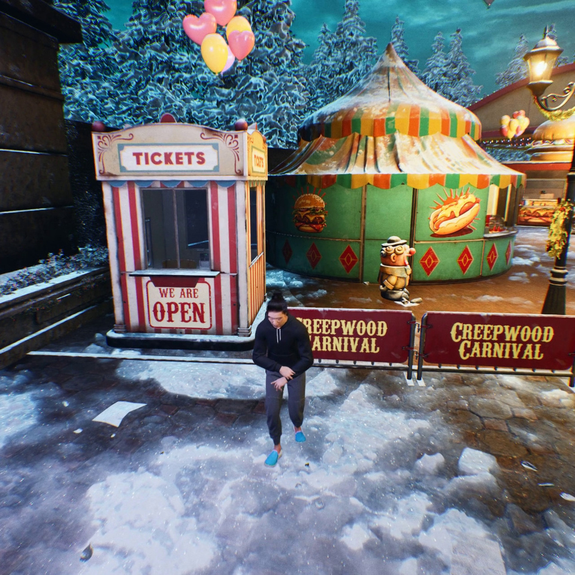
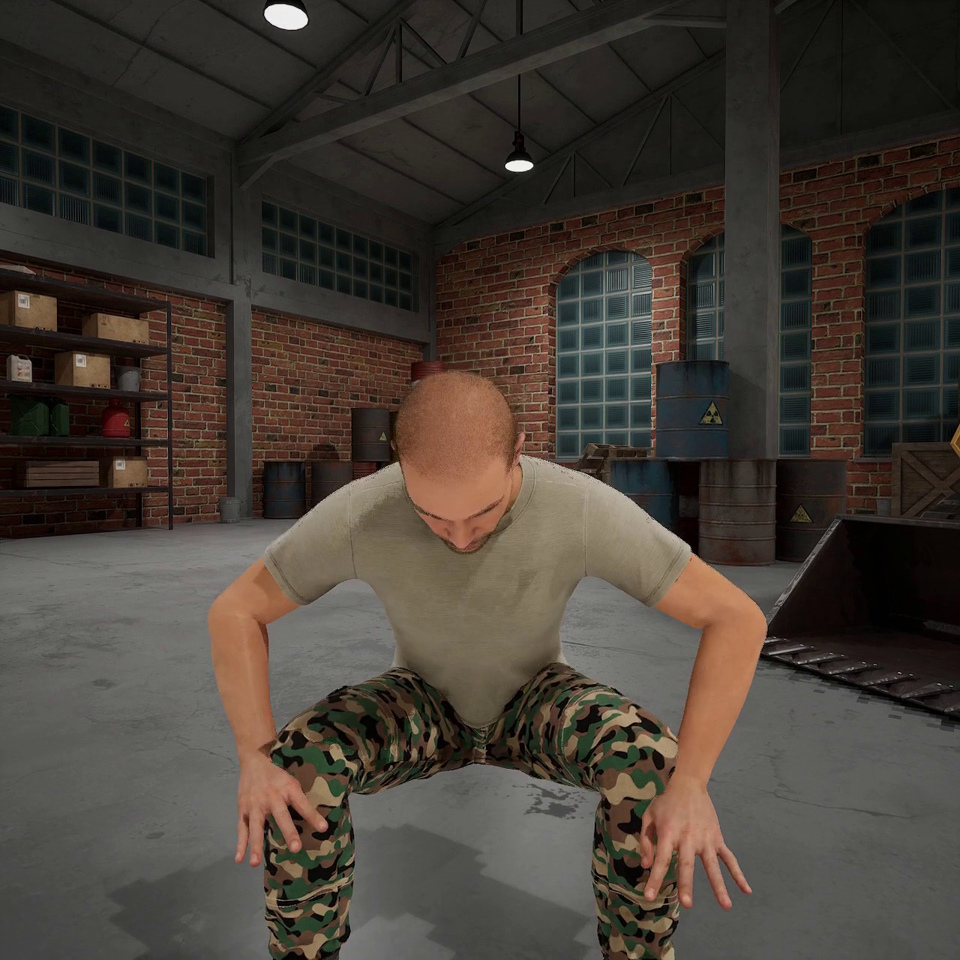
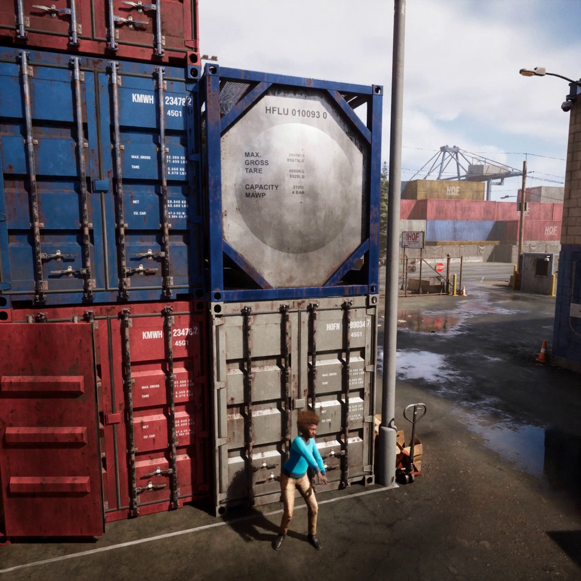
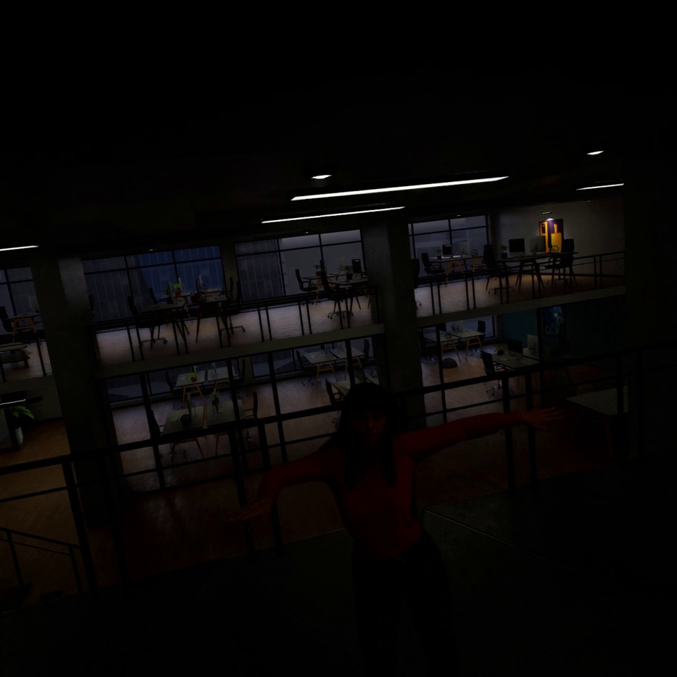

ACaM · MOTION EVIDENCE · PROMPT v1
光流提示如何改变运镜判断？
从现有30条实验中选出9条代表性案例，查看预测稳定、纠正、退化与掩码局限。
A就是原始RGB输入；所有视频、预测和掩码均复用历史缓存。本页是事后定性选例，不用于估计总体准确率。
No Change 预测保持一致
同一视频四组预测完全相同：同时保留全对与全错的案例。

A · 原始RGB · 50%时点acam_row_00713
Dolly InA D · Dolly In ✓B D · Dolly In ✓C D · Dolly In ✓D D · Dolly In ✓
四组均正确；运动提示没有改变判断。
打开四组动态对比 →
A · 原始RGB · 50%时点acam_row_13918
Boom DownA C · Dolly Out ✗B C · Dolly Out ✗C C · Dolly Out ✗D C · Dolly Out ✗
掩码非空，但四组都将Boom Down误判为Dolly Out。
打开四组动态对比 → A · 原始RGB · 50%时点
A · 原始RGB · 50%时点acam_row_25042
Zoom InA A · Zoom In ✓B A · Zoom In ✓C A · Zoom In ✓D A · Zoom In ✓
掩码全空，四组仍全部正确识别Zoom In。
打开四组动态对比 →Improved 相对A真正纠正
A本来错误，至少一组运动提示使预测变为正确。
A · 原始RGB · 50%时点
acam_row_20782
Tilt UpA D · Pan Left ✗B A · Tilt Up ✓C B · Tilt Down ✗D B · Tilt Down ✗
仅B将A的Pan Left纠正为Tilt Up；C/D未获益。
打开四组动态对比 →Degraded 运动提示引入错误
A本来正确，加入至少一种光流提示后变错。

A · 原始RGB · 50%时点acam_row_14899
Boom UpA A · Boom Up ✓B A · Boom Up ✓C D · Dolly Out ✗D B · Boom Down ✗
A/B正确；背景候选提示C与融合D引入错误。
打开四组动态对比 →A · 原始RGB · 50%时点
acam_row_22319
Truck LeftA B · Truck Left ✓B B · Truck Left ✓C A · Dolly In ✗D B · Truck Left ✓
C由正确变错，D恢复至A水平；属于局部恢复。
打开四组动态对比 → A · 原始RGB · 50%时点
A · 原始RGB · 50%时点acam_row_23741
Truck RightA A · Truck Right ✓B B · Truck Left ✗C A · Truck Right ✓D B · Truck Left ✗
主体提示B及融合D将Truck Right误判为Truck Left。
打开四组动态对比 →Mask Issue 掩码质量待核查
用现有掩码与画面检查漏检或背景污染风险，不以非空等同于正确。
A · 原始RGB · 50%时点
acam_row_24116
Truck RightA B · Pan Left ✗B B · Pan Left ✗C B · Pan Left ✗D B · Pan Left ✗
人体存在可见肢体变化，但动态掩码全空；四组均错。
打开四组动态对比 →
A · 原始RGB · 50%时点acam_row_00424
Dolly InA D · Boom Down ✗B D · Boom Down ✗C A · Tilt Up ✗D D · Boom Down ✗
动态掩码覆盖较多地面与反射区域，存在背景污染风险。
打开四组动态对比 →